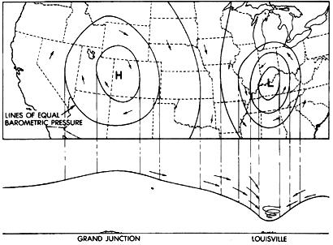
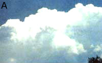
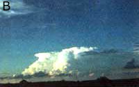
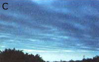
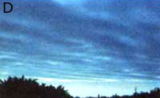
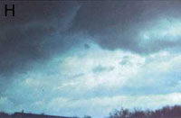
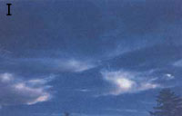
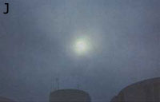

Your Eyes Can Keep You Dry.
When you walk in the woods or open country, where do your eyes play? Of you're like me, you easily get wrapped up in plodding-figuring out where the next footfall will be-instead of observing. No wonder the weather catches us by surprise.; we're just not paying attention. The sky, the greenery, the ground and their inhabitants provide a constant flow of clues about what the atmosphere holds in store.All we need to tap this 24-hour weather report is a sharp set of senses. Just look, listen, feel, and yes, even sniff.
For example, have you ever noticed that the odor of rotting wood (maybe mixed with the scent of mint) seems more pungent some days than others? There's a perfectly good explanation: When atmospheric pressure is high, odors are subdued-held in; when it drops, they waft into the air.
Predicting weather without the meteorologist's arsenal of instrumentation is mostly a matter of charting changes. A onetime viewing of clouds, for instance, isn't nearly as sure as a comparison of the current situation with the type of clouds present a few hours, even a few days, ago. In fact, any single predictor mentioned in this article is of little value. Weather has defied such simplification for eons. So look for evidence from every source available, and hazard a guess only when the majority of the symptoms point to the same prognosis.
Lay weather forecasters who've lived in an area for many years often become quite proficient, because they've learned from experience what a particular condition tells about the future weather. Even if you've lived in one place for only a year or two, you probably know from what direction the wind usually blows.
When you pack into a wilderness many hours (or days) from home, you start without the benefit of experience: You don't know what the prevailing wind is, what direction storms usually approach from, or how the topography affects the weather.
If you're heading into federally controlled backcountry, the regional ranger station may be able to offer a detailed weather history of the area. Perhaps locals-outfitters, itinerant fisherman, or even your friendly bartender-are willing to part with some of their accumulated weather wisdom. Barring the closer sources, the National Climatic Data Center is the repository for weather information, Two helpful publications they offer are Comparative Climatic Data for the United States and Climatic Atlas of the United States. You can order them for $4 and $15 respectively from NDCD, Federal Building, Asheville, NC 28801-2682, attention: Publications.
Before we can get down to specific prognostication, we'll need to review some basic weather principles. On a large scale, weather systems in North America-in fact, in all the middle latitudes of the Northern Hemisphere-are carried from west to east by the jet stream. Prevailing high altitude winds are from the west. (Please note: It's all reveresed in the Southern Hemisphere). Regional lower-level winds, however, swing around the points of the compass as the air in higher-pressure areas moves toward lower-pressure areas in attempts to equalize barometric differences (see illustration above).
The process goes something like this: Air descends in a high-pressure system (literally a tall stack of atmosphere) and spirals outward in a clockwise rotation. Because the air has come from high altitude, it carries little moisture, givin high-pressure systems a reputation for fair weather. The air moved outward, continuing its descent, and the pressure becomes progressively lower. As the air mass passes close to the ground, it picks up moisture. At a certain point, the winds begin spiraling inward to the low in a counterclockwise direction. Accumulated moisture may form clouds and eventually drop out as a precipitation. Hence the low-pressure system's reputation for inclement weather.
There are three important things to remember about general circulation and the movement of air from highs to lows. First, high-level winds carry weather systems west to east (usually from the southwest in summer and from the northwest in winter); second, lower-level winds (the ones you're most aware of) may be entirely different from the general circulation; and third, lower-level winds move counterclockwise around lows.
Clouds, wind, humidity and pressure are the symptoms of approaching weather. The mix foretells one of three conditions: stable weather, the arrival of a cold front, or the arrival of a warm front. A front is simply the disturbance at the boundary between masses of colder and warmer air-a sometimes violently unstable region that produces most of our bad weather.
If it's a cold front, the heavier cold air will push under the warm, and there may be severe weather (thunderstorms in summer) of short duration. If it's a warm front, the lighter warm air pushes over the cold, and there's likely to be protracted (but usually not very heavy) precipitation. Most often, cold fronts come and go quickly, while warm fronts give more warning and last longer. On average, a cold front will pass through every five to seven days, so you're not being paranoid if it seems to rain only on weekends.
An intervening warm front-arriving a couple of days after the cold-may not be strong enough to bring any precipitation. Nonetheless, two to three days (the usual interval between warm and cold) is the farthest in advance you can make a halfway reliable seat-of-the-pants weather prediction. And just like that questionable sale on the evening news, your accuracy will decline dramatically the farther you look into the future. Still, since you're outdoors, at least you'll never get caught forecasting a chance of rain in the middle of a downpour.
If you've lived in one place for only a year or two, you probably know from what direction the wind usually blows.
There are two basic types of clouds: heap (cumulus) and layered (stratus). These are further segregated by their altitude (cirrus for high, alto for medium) and their tendency to deliver precipitation (nimbus). Clouds often violate this neat categorization by being both basic types at once-the stratocumulus, for example-by changing form one to another or by adopting unique characteristics. As a result, descriptive words are often tagged onto a cloud's name, such as cumulus congestus (a cumulus trying to become a cumulonimbus) or stratocumulus mammatus (an unstable cloud with bags hanging down).
Fortunately, to predict the weather, we need to know only 11 of the hundreds of cloud permutation. The important 11 and what they portend, as well as the sequences in which they occur in different types of weather, are shown on pages 40 and 41.
An important trend in any type of deteriorating weather is the lowering of cloud bottoms. As the system approaches, the clouds will form at lower and lower altitudes. Low clouds with irregular under-:, cents sides are most likely to produce heavy,precipitation.
Clouds also affect the way the sky and celestial objects look, leading to some of the best-known folk weather predictors. Most people are familiar with the adage: "Red sky at night , sailor's delight; red sky at morning, sailor take warning." It's been with us at least since the time of heophrastus in the three hundreds B.C. There's a lot to this one, as long as you're looking in the right direction; not into the setting or rising sun but at the opposite horizon. Red implies lower-level, water bearing clouds. Thus if the red is in the 4 west, rain may be on the way. But if in the . east the system is beating a retreat. Likewise, a rainbow to the east or west tells you there's rain in that direction.
Another well-known and accurate portent of falling weather is a large halo around the moon, indicating a thin layer of cirrostratus clouds. If the winds are from any point between northeast and south, precipitation is likely within 24 hours. If the halo (either moon or sun) changes to a frosted appearance, altostrati have moved in, suggesting precipitation within 12-20 hours. (Note also that this sequence of clouds augurs an approaching warm front.)
On average, a cold front will pass through every 5 to 7 days, so you're not paranoid if it seems to rain only on weekends.
As a general rule, fair weather comes from the southwest in summer and the northwest in winter, but it's very helpful to know what the prevailing wind is in your locale. Nature offers some clues: Trees show the undersides of their leaves when the wind shifts form its usual direction. Silver maples and cottonwoods are particularly helpful because the bottoms of their leaves are silvery white. To know what the wind direction is at the moment, look for a perched bird. It will almost always face into the wind.
Once you know where the fair-weather wind comes from, watch for change. If the wind shifts counterclockwise to between the south and northeast, there's likely to be bad weather in the next 24 hours. Likewise, if you notice that the wind is shifting in a clockwise manner from between south and northeast to the west, the weather is probably going to improve.
Armed with the knowledge that winds rotate counterclockwise around a low and that the storm system as a whole is headed east, you can be a lot more specific about the approach of bad weather. If you face into the wind and raise your right arm straight to the side, it points into the low. If you know which direction is which-and you should, if you're out in the sticks-you can figure out whether the storm is coming toward you, passing to the north or passing to the south, based on the assumption that the system as a whole is headed east.
Now we're going to embellish the "face the wind" axiom a bit, to make it more accurate and to learn even more about what's coming. Because of friction, the surface wind direction is different from the lower-level wind circulating around a low. If they're available, use low-floating clouds to determine the lower-level wind direction. Otherwise, adjust by using the following corrections: Over rough terrain, the surface wind is turned inward (toward the low's center) about 30°; over open water, the deflection is only 15°. Thus you should turn somewhere between 15° and 30° to your right to correct for surface friction.
Should the skies cooperate and allow you to see lower-level and upper-level clouds at the same time, it's simple to predict with the "crosswind rule." Face into the oncoming lower clouds (this saves having to worry about surface friction), and note the direction that the upper clouds are coming from. If they're coming from your right, the storm is approaching; if they're coming from the left, it has passed; if they're coming toward you, you're on the south side of the system, and the weather will stay pretty much the same; and if they're moving away, you're to the north, and-again-the weather will be steady.
To know what the wind direction is at the moment, look for a perched bird.It will almost always face into the wind.
Cold and warm fronts have characteristic patterns of humidity and barometric pressure. Before a cold front arrives, humidity will usually remain steady or rise only slightly, and the barometric pressure will drop fairly rapidly (depending on the storm's intensity). After the front's passage, the humidity will drop precipitously and the pressure will shoot up. A warm front will be preceded by increasing humidity and steadily (but slowly dropping) pressure. Once it's passed, the humidity will be steady or even increase slightly and the pressure will rise a little.
Signs of change in humidity and pressure come from our own senses and from clues offered by plants and animals. People who are prone to the aches and pains of sore joints have more trouble when it's humid. There's a statistical correlation between antisocial behavior and low barometric pressure.
So, in general, we're likely to feel worse physically and mentally when the humidity is increasing and the pressure is dropping.
Sound travels farther when the air pressure is low; many people claim that distant noises seem almost to be coming down a tunnel. Another sign of low pressure is smoke that curls over toward the ground. Likewise, visibility often drops off in the haze of low pressure and high humidity. (Over water, though, high visibility may be a sign of unstable air that portends a storm.)
With pressure increases, smoke will rise straight up, odors will be subdued, the water level in dug wells will drop noticeably, ice on ponds may crack, and if you've toted any canned goods along on an outing, the tops might pop in. Though it may seem counter-indicative at first, dew, frost, or ground fog in the morning is a sign of low humidity and good weather. Only when the air is dry and clear will the earth's surface give up enough heat to the night sky to cause condensation.
Animal and plant indications of humidity/pressure abound. If you see significant numbers of deer moving down from the mountains to the valleys, expect snow within a day or two. Look for birds flying at high altitude in times of high barometric pressure. On the other hand, when hawks and vultures play on rising columns of air called thermals, conditions are ripe for forming cumulus congestus and maybe cumulonimbus clouds. It's also been variously reported that before bad weather insects swarm near the ground; swallows and other insect eaters fly low; frogs croak a lot; rodents such as mice and squirrels are frisky and noisy; birds chirp and may feed at unusual times; trout shun artificial enticements and leap for swarming insects; spiders will build up their webs eight hours prior to a storm but disassemble them if it's to be a bad blow; bees will stay close to home; ants will travel in columns rather than scattering; plants, including chickweed, clover, dandelions, hawkweed, indigo, African marigolds, tulips, and scarlet pimpernel, close up and the pitcher plant opens.
Weather prediction skills can be vital in the backcountry, but they're also a heck of a lot of fun day to day. I find it healthy to pause in the office parking lot to look up and apply the "crosswind rule." It helps to at least temporarily restore an intimacy with the environment that bricks, beams, and video screens too quickly steal. Besides, it keeps my fellows wondering about me.
But there are penalties as well. More mornings than not, my spouse's first words-often before I've opened both eyes-are,. "What's the weather going to be today?" I roll my head back, gaze out the window at the sky, and spout something like, "I'd say 30% chance of rain unless it doesn't."
Cold Front
1 Cirrus: If well-developed, and lower level winds are indicative,
cirrocumulus will develop quickly.
2 Cirrocumulus: Indicator, if following lowing cirrus by a few hours.
3 Altocumulus or altostratus: Look for frosted appearance and lowering of ceiling.
4 Stratocumulus: Immediately before storm clouds. Sometimes this will be the first cloud seen and will stream in by rows parallel to the wind; common in winter 5 Cumulonimbus in summer, nimbostratus in winter; herald the arrival of the front.
6 After front passes, some cumulus may remain.
Warm Front 1 Cirrus: May be very thin at first Land may persist with other cirrus forms for several days.
2 Cirrostratus: Will move across 2 a and cover the entire sky.
3 Cirrocumulus: May develop the 99 classic "mackerel sky" of ripples.
4 Altocumulus: A deck of expanding ing, thickening clouds.
5 Altostratus: May see red skies in 59 western sunset or in west at sunrise.
6 Nimbostratus, occasionally cumulonimbus; the heaviest precipitation of the warm front.
7 Stratus: May develop as the front Z passes and continue light precipitation for several days.
Eleven Important Cloud Formations and What They Bring
A. Cumulus congestus
Description: Cumulus starting at low altitude, turning gray, billowing, and beginning to develop vertically. Weather: May produce precipitation immediately.
B. Cumulonimbus Description: Towering, angry-looking, billowing cloud varying from white to dark gray. Weather: The severe weather cloud, which may bring high winds and thunderstorms.
C. Stratus Description: Usually lighter gray, low-level, flat layers. Weather: Heavy precipitation if wind is from between northeast and south.
D. Cumulus Description: Separated, fluffy, white clouds. Weather: Fair weather unless developing into other cumulus.
E. Cirrocumulus Description: High, white layer of puffy or rippled clouds. Weather: Precipitation in 15 to 20 hours if wind is from between northeast and south.
F. Cirrostratus Description: High, transparent, white clouds that put a halo around the moon. Weather: Precipitation in 15 to 20 hours if wind is from northeast.
G. Stratocumulus Description: Light-to dark gray, variable tone, low-level layers. Weather: Precipitation soon.
K. Nimbostratus Description: Light to darkgray monotonal, low-level cloud layers that obscure the sun. Weather: Precipitation of long duration if wind is from between northeast and south.
I. Cirrus Description: High, lacy, white ice cloud; often hairy appearance. Weather: Fair if lower-level wind is from west.
J. Altostratus Description: Medium-height layer of gray, translucent clouds. Weather: Precipitation in 10 to 15 hours if wind is steady from between northeast and south; overcast for other winds.
K. Altocumulus Description: Medium-height, white to light-gray layers. Weather: Precipitation in 10 to 15 hours if wind is steady from between northeast and south.
|
 High- and low- pressure systems |
 |
 |
|
 |
 |
|
|
|
 |
 |
|
 |
|
|